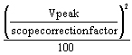

Operating Documentation
Direction 5440000, Rev# 5
Signa HDxt Service Methods
Module Version 2.0, Version Date 12/1/09
Operating Documentation |
| Required Persons | Preliminary Reqs | Procedure | Finalization |
|---|---|---|---|
| 1 | Not Applicable | 30 mins | Not Applicable |
Refer to the Tools and Test Equipment Section below for equipment required to measure power with the RF Power Measurement Kit or refer to Alternate Equipment Setup. The RF Power Measurement Kit is the preferred method for RF power measurement.
| Last Update | September 21, 2005 |
| Item | Qty | Effectivity | Part# | Manufacturer | |
|---|---|---|---|---|---|
| 100 MHz Scope (equivalent or greater) | 1 | - | 46-183029P61 | - | |
| RF Power Measurement Kit | 1 | - | 46-317724G1 or G2 | - | |
| 50 ohm, 200 Watt, 30dB Attenuator (dummy load) | 1 | - | 46-317724P14 | - | |
| RF Test Cables Kit | 1 | - | 46-255816G1 | - | |
| Digital Multimeter (DMM) | 1 | - | 46-194427P49 | - | |
| DMM Test Cable – BNC to Banana (optional) | 1 | - | 2239139 | - | |
| Screwdriver, slotted (long & narrow) | 1 | - | - | - | |
| ||||
| POSSIBLE RF BURNS. | ||||
| POSSIBLE RF BURNS WHEN DISCONNECTING HELIAX CABLES FROM J3 OR J4 ON THE REAR OF THE SRFD2. | ||||
| PREVENT POSSIBLE RF BURNS WHEN DISCONNECTING HELIAX CABLES FROM J3 OR J4 ON THE REAR OF THE SRFD2 BY VERIFYING THAT THE SYSTEM IS NOT MANUALLY PRESCANNING OR SCANNING. VERIFY THAT THE SCAN DESKTOP ICON DISPLAYS THE “IDLE” MESSAGE. |
Topics covered in this procedure are:
This process will test the assumptions that:
The (U)CERD Exciter or RRF (Remote RF) Master Exciter is outputting enough power for the system to meet the rated head and body RF output power levels ((U)CERD Exciter or RRF Master Exciter describes how to check the (U)CERD Exciter or RRF Master Exciter output.).
The SRFD2 has been pre-adjusted at the factory and that, ideally, no further adjustments by the FE are necessary.
The RF amplifiers within the SRFD2 are capable together of outputting 16kW.
The (U)CERD Exciter or RRF Master Exciter cannot be adjusted. (U)CERD Exciter or RRF Master Exciter describes how to measure and verify that the Exciter or RRF Master Exciter output is correct. The head and body RF output power levels must be checked and, if not correct, adjusted into specification. Three methods are available and listed in the order of preference for measuring head and body RF output power:
RF Power Measurement Kit - Easy to use, preferred method of power measurement.
Bird wattmeter - Must account for cable and load loss to determine actual power.
Oscilloscope - Must know the scope channel correction factor if the scope bandwidth is < 300 MHz. Must account for cable and dummy load loss and the scope bandwidth limitation (channel correction factor) to accurately calculate the power from the observed peak voltage. Refer to Scopes with Less Than 300 MHz BandwidthThis method works but the process used to derive the power is somewhat complex and lacks the accuracy of the previous two methods. It is, for this reason, not recommended.
It is strongly recommended that the RF Power Measurement Kit be used to obtain an accurate measurement of the RF output power. If it is not possible to obtain an RF Power Measurement Kit then one of the two other methods can be used provided that:
The Dummy Load and Cables Calibration procedure inDummy Load and Cables Calibration has been performed and the individual loss values are known.
The oscilloscope input channel correction factor is known when the scope bandwidth is < 300 MHz and the wattmeter is not being used. See Scopes with Less than 300MHz Bandwidth.
A Calibration Flow been provided in the Main Module.
| ||||
| POSSIBLE RF BURNS. | ||||
| POSSIBLE RF BURNS WHEN DISCONNECTING HELIAX CABLES FROM J3 OR J4 ON THE REAR OF THE SRFD2. | ||||
| PREVENT POSSIBLE RF BURNS WHEN DISCONNECTING HELIAX CABLES FROM J3 OR J4 ON THE REAR OF THE SRFD2 BY VERIFYING THAT THE SYSTEM IS NOT MANUALLY PRESCANNING OR SCANNING. VERIFY THAT THE SCAN DESKTOP ICON DISPLAYS THE “IDLE” MESSAGE. |
| ||||
| Property Damage! Prevent Coil And Associated Switch Damage, By Removing All Phantoms And Hardware (I.E., Head Coil, Surface Coil...) From The Magnet Bore. | ||||
Verify that the system is not scanning and that all coils have been removed from the magnet bore. Refer to the messages above.
| ||||
| When hooking up the Power Measurement Kit , put the SW RF Enable switch on the RF I/O to OFF! | ||||
Remove the front cabinet cover and open the rear cabinet cover of the RF Cabinet.
If the site is equipped with a UTNS3, then seeStopping and Starting UTNS3 to disable UTNS3. This does not apply to UTNS or UTNS2.
Inhibit TR and DD faults by moving the TR Enable switch, SW2 to the Disable, Down position on the Driver Module, see Illustration 1.
Illustration 1: RFS Driver Module Front Panel TR Switch Disabled

If you are using the RF Power Measurement Kit then calibrate the scope by referring to the RF Power Measurement Kit laminated card set.
| NOTE: | If possible, use the new card set – Part numbers of the
set are:
|
Look in the upper right corner of each card and find the card labeled CAL.
Configure the scope as in the illustration on the card.
Follow the directions on the card to calibrate the scope using the 4 dBm calibrator.
If you are not using the RF Power Measurement Kit then complete the Dummy Load and Cables Calibration procedure in Dummy Load and Cables Calibration. If using the scope to measure the RF output power then also make sure that the scope correction factor has been determined for the input channel to be used as described in Scopes with Less Than 300 MHz Bandwidth.
| ||||
| POSSIBLE RF BURNS. | ||||
| POSSIBLE RF BURNS WHEN DISCONNECTING HELIAX CABLES FROM J3 OR J4 ON THE REAR OF THE SRFD2. | ||||
| PREVENT POSSIBLE RF BURNS WHEN DISCONNECTING HELIAX CABLES FROM J3 OR J4 ON THE REAR OF THE SRFD2 BY VERIFYING THAT THE SYSTEM IS NOT MANUALLY PRESCANNING OR SCANNING. VERIFY THAT THE SCAN DESKTOP ICON DISPLAYS THE “IDLE” MESSAGE. |
| ||||
| Property Damage! Prevent Coil And Associated Switch Damage, By Removing All Phantoms And Hardware (I.E., Head Coil, Surface Coil...) From The Magnet Bore. | ||||
Verify that the system is not scanning and that all coils have been removed from the magnet bore. Refer to the messages above.
If using the RF Power Measurement Kit then refer to the RF Power Measurement Kit laminated card set.
Look in the upper, right corner of each card and find the card labeled 72 (1.5T Body Output).
| NOTE: | The body RF output is no longer connected to the non-existent EFB unit, as the older RF Power Measurement Kit cards show, but instead to the J4 output on the rear of the SRFD2 module. An RF adapter is provided in the RF Power Measurement Kit to connect between the HN J4 body RF output and the RF Power Measurement Kit 40 dB N-connector coupler. |
Configure the system as shown in the illustration on the card.
Confirm that the rotary attenuator is set to the correct position indicated on the card.
If using the wattmeter or scope (NOT the RF Power Measurement Kit) to measure power then refer toAlternate Equipment Setup for the proper system body configuration.
Prepare the system to scan in Body mode per Table 1 .
Table 1: SCAN PROTOCOL: BODY MODE
|
Put RF Enable back to “ON” on RF I/O.
Verify Body LED is illuminated on front of SRFD2 Module.
[Manual Prescan][Scan TR]. View the Body RF output waveform on the oscilloscope. Slowly increase TG to 200.
| NOTE: | Check the system center frequency NOW, especially if this is a new installation, and confirm that it consists of 8 digits and that it is correct. The RF amplifiers will output a low and distorted RF waveform if center frequency is wrong due to a missing digit. |
Verify the Unblank LED on the front of the SRFD2 Module pulses on/off indicating that the amplifier is outputting RF energy.
If the SRFD2 faults with error 2254212 (peak power fault) and the cabling to and from the SRFD2 is correct, then it will be necessary to calibrate the amplifier. Proceed to Body and Head RF Output Power Adjustments.
If using the RF Power Measurement Kit then refer to the specified number of divisions needed to achieve 16kW output from the RF Power Measurement Kit card 72 (1.5T Body RF Output) and verify that the waveform displayed on the scope meets, and does not exceed, this specification.
If using the wattmeter procedure then read the wattmeter display and use the formula below to calculate the body RF power and verify that it meets, and does not exceed, the 16kW (72dBm) specification. The dummy load and cable loss factor was determined from the procedure in Dummy Load and Cable Calibrations.
Table 2: RF Power Measurement (in watts) Using Wattmeter And Formula:
| Wattmeter reading (in watts) X dummy load and cable loss factor |
If using the oscilloscope procedure (NOT the RF Power Measurement Kit) then read the peak voltage (Vpeak) from the scope display and use the formula below or the Power Calculator Tool to calculate the RF output power and verify that it meets, and does not exceed, the 16kW (72dBm) specification. The dummy load and cable loss factors were determined from the procedure in Dummy Load and Cable Calibrations. The scope correction factor was determined in Scopes with Less than 300 MHz Bandwidth.
Table 3: RF Power Measurment (in watts) Using Oscilloscope And Formula:
 X dummy load and cable loss factor |
Decrease TG to 0 (zero). Click [Done].
Verify that the scan desktop icon is displaying the “Idle” message.
If the body RF power output did not meet specifications then proceed directly to Body And Head RF Output Power Adjustments.
If the body RF power output met specifications then proceed to the next section, Step .
| ||||
| POSSIBLE RF BURNS. | ||||
| POSSIBLE RF BURNS WHEN DISCONNECTING HELIAX CABLES FROM J3 OR J4 ON THE REAR OF THE SRFD2. | ||||
| PREVENT POSSIBLE RF BURNS WHEN DISCONNECTING HELIAX CABLES FROM J3 OR J4 ON THE REAR OF THE SRFD2 BY VERIFYING THAT THE SYSTEM IS NOT MANUALLY PRESCANNING OR SCANNING. VERIFY THAT THE SCAN DESKTOP ICON DISPLAYS THE “IDLE” MESSAGE. |
| ||||
| Property Damage! Prevent Coil And Associated Switch Damage, By Removing All Phantoms And Hardware (I.E., Head Coil, Surface Coil...) From The Magnet Bore. | ||||
Verify that the system is not scanning and that all coils have been removed from the magnet bore. Refer to the messages above.
If using the RF Power Measurement Kit then refer to the RF Power Measurement Kit laminated card set.
Look in the upper, right corner of each card and find the card labeled 63 (1.5T Head Output).
The head RF output connection is no longer to the non-existent EFB unit, as the reference cards in some of the older kits show, but instead to the J3 output on the rear of the SRFD2 Module.
Disable RF “Out” on RF I/O
Configure the system as shown in the illustration on the card.
Confirm that the rotary attenuator is set to the correct position indicated on the card.
If using the wattmeter or scope (NOT the RF Power Measurement Kit) to measure power then refer toAlternate Equipment Setup for the proper system head configuration.
Prepare the system to scan in Head mode per Table 4 .
Table 4: SCAN PROTOCOL: HEAD MODE
|
Verify Head LED is illuminated on front of SRFD2 Module.
Enable RF on RF I/O.
Click [Manual Prescan] and then [Scan TR]. View the Head RF output waveform on the oscilloscope. Slowly increase TG to 200.
| NOTE: | Check the system center frequency NOW, especially if this is a new installation, and confirm that it consists of 8 digits. Also verify that these 8 digits are correct. The RF amplifiers will output a low and distorted RF waveform if center frequency is wrong due to a missing / wrong digit. |
Verify the Unblank LED on the front of the SRFD2 Module pulses on/off indicating that the amplifier is outputting RF energy.
If using the RF Power Measurement Kit then refer to the specified number of divisions needed to achieve 2kW (63dBm) output from the RF Power Measurement Kit card 63 (1.5T Head RF Output) and verify that the waveform displayed on the scope meets, and does not exceed, this specification.
If using the wattmeter procedure then read the wattmeter display and use the formula below to calculate the head RF power and verify that it meets, and does not exceed, the 2kW (63dBm) specification. The cable loss factor was determined from the procedure in Dummy Load and Cable Calibrations.
Table 5: RF Power Measurement (in watts) Using Wattmeter And Formula
| Wattmeter reading (in watts) X cable loss factor |
If using the oscilloscope procedure (NOT the RF Power Measurement Kit) then read the peak voltage (Vpeak) from the scope display and use the formula below or the Power Calculator Tool to calculate the RF output power and verify that it meets, and does not exceed, the 2kW (63dBm) specification. The dummy load and cable loss factor was determined from the procedure in Dummy Load and Cable Calibrations. The scope correction factor was determined in Scopes with Less than 300 MHz Bandwidth.
Table 6: RF Power Measurement (in watts) Using Oscilloscope And Formula
 X dummy load and cable loss factor X dummy load and cable loss factor |
Decrease TG to 0 (zero). Click [Done] and then [End Exam].
Verify that the scan desktop icon is displaying the “Idle” message.
If the amplifier is not outputting 2kW of RF power but the body power is within specifications then proceed directly to Head Gain Pot Adjustment in the Body and Head RF Output Power Adjustments .
If the RF head output power is 2kW and the body output power is 16kW then no further adjustments are necessary. If you will be going on to do the Universal Power Monitor - Body Setup and Calibration, leave the RF Power Measurement Kit connected and switches in test positions. Otherwise, proceed directly to System Restoration.
No finalization steps.